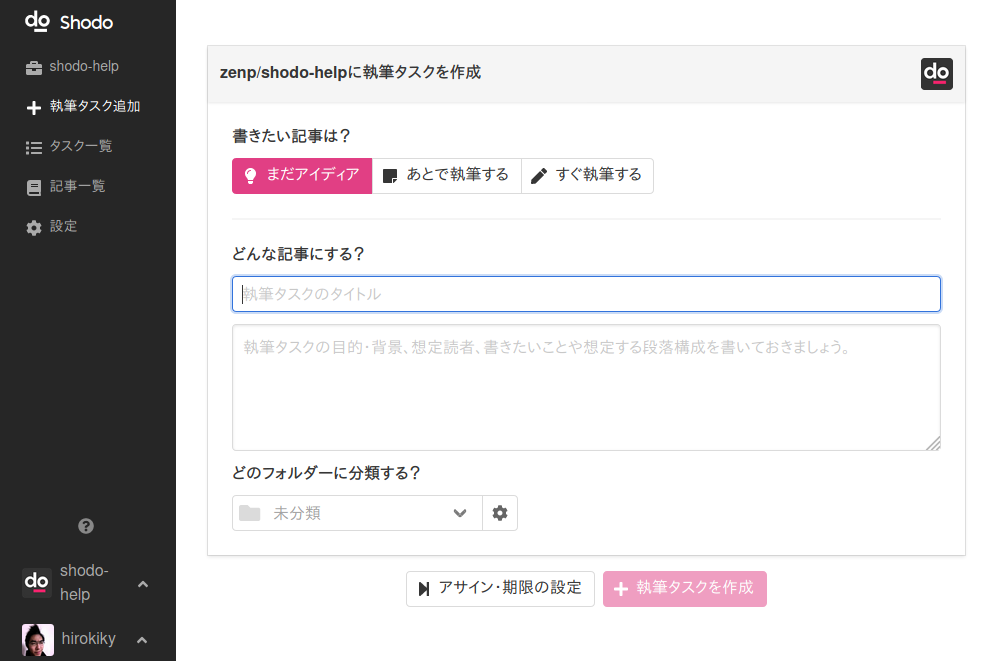

執筆タスクを作ろう¶
さぁ、さっそく記事を書こう！と思われるかもしれませんが、ちょっと待ってください。 Shodoにおける 第一歩は「執筆タスク」を作ることです 。
執筆タスクは「こんな記事を書こう」という内容をまとめたものです。 記事が完成するまで「執筆中」や「レビュー待ち」のような状態の管理も行います。 記事を書きたいなと思ったときは、まず執筆タスクを「アイディア」として作成すると良いでしょう。
執筆タスクの作り方¶
執筆タスクを追加したいときは Shodoアプリ のサイドバーから「執筆タスク追加」をクリックします。 以下のような執筆タスク画面が表示されますので、タイトルや記事の内容説明、アサイン（担当者）などを入力します。

ここではタスクには以下のような設定ができます。
| 要素 | 意味 |
|---|---|
| タイトル | 書きたい記事のタイトル。 管理上のタイトルなので、執筆タスクのタイトルはキャッチーにしなくて良い。 |
| 記事の説明 | どんな記事を書きたいのかの説明。 書くべき内容は後述。 |
| フォルダー | 執筆タスクの管理をするためのフォルダー。 |
| アサイン | 記事を書く人。執筆タスクの担当者。 |
| レビュアー | 記事のレビューをする役割の人。 記事が書けてレビューステータスになったときにコメントをする人。 |
| 期限 | 記事を公開・完成する予定の日時。 プロジェクトのダッシュボード画面などで期限が近い執筆タスクが表示されます。 |
執筆タスクが書き終われば、「新規タスクを追加」をクリックしてください。
なぜ執筆タスクを作るのか¶
なぜ記事をすぐに書かずにタスクを作るのでしょうか？ Shodoでは記事のバージョン管理やレビューを行えます。1枚の記事でなく「書きたいこと」として管理するためにタスクを作ります。
記事を書き始める前に、どんなことを書くか、何を伝えたいかを大まかにまとめると良いでしょう。 執筆タスクには「説明」を書けるので、事前にまとめておくことで書く記事の内容がブレにくくなります。 たとえば新しいブログ記事を書くのであれば、以下について先にまとめておくと良いでしょう。
記事で何を最も伝えたいのか
記事を読んだあとに取ってほしいアクションは何か
どんな人が読むのか
単に「イベント開催を告知する記事を書く」と考えると、いかにも事務的だという内容の記事を書いてしまいがちです。 それを防ぐためにも、「伝えたいこと」を事前に執筆タスクの説明としてまとめることをオススメします。 たとえば「イベント開催告知」であれば以下のような説明になるでしょう。
〇〇イベント開催のお知らせをブログで公開する。 まだ開催の決定をお知らせするだけの内容なので、楽しくワクワクする内容にしたい。
何を最も伝えたいのか：イベントの存在を知って、イベントに行きたいとワクワクして欲しい
取ってほしいアクションは何か：今後も情報を知ってもらうために、ブログの購読とTwitterフォローをして欲しい
どんな人が読むのか：弊社のサービス〇〇のユーザー様と、コンテンツマーケティングを効果的に行いたいマーケターさん
このように書いておくだけで、記事の仕上がりが大きく変わってきます。 「当日をぜひお楽しみに！」や「お会いできることを楽しみにしています」といった言葉が記事中に書かれることでしょう。 もし単に「イベントの告知をする」という仕事にしてしまった場合、「こんにちは。イベント開催のお知らせです」のような淡白な文章になってしまいます。
とくに、他の人に執筆を依頼する場合や、すぐに内容を書き始めない場合は執筆タスクの説明をしっかり書いておくことをオススメします。 いざ書くときに「何を書けば良いのだろう？」と悩んで時間を無駄にしたり、温度感や読者ターゲットが想定と大きく違う記事を書いてしまう問題を避けられます。
執筆タスクについて分かった後は、Shodoの先進的なポイントでもあるステータス管理について知っていきましょう。